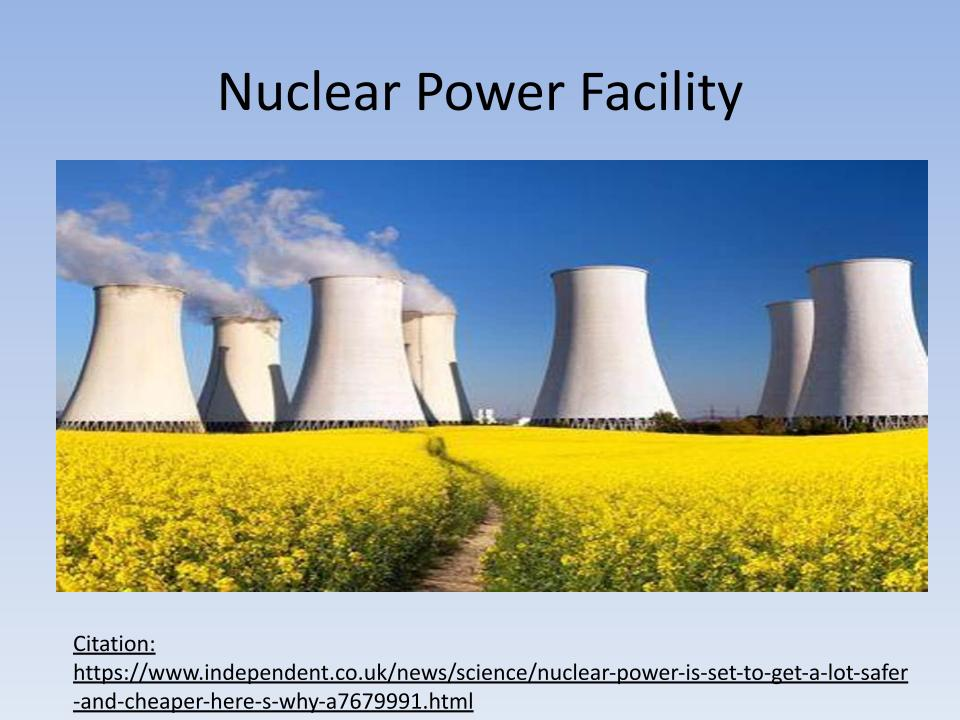
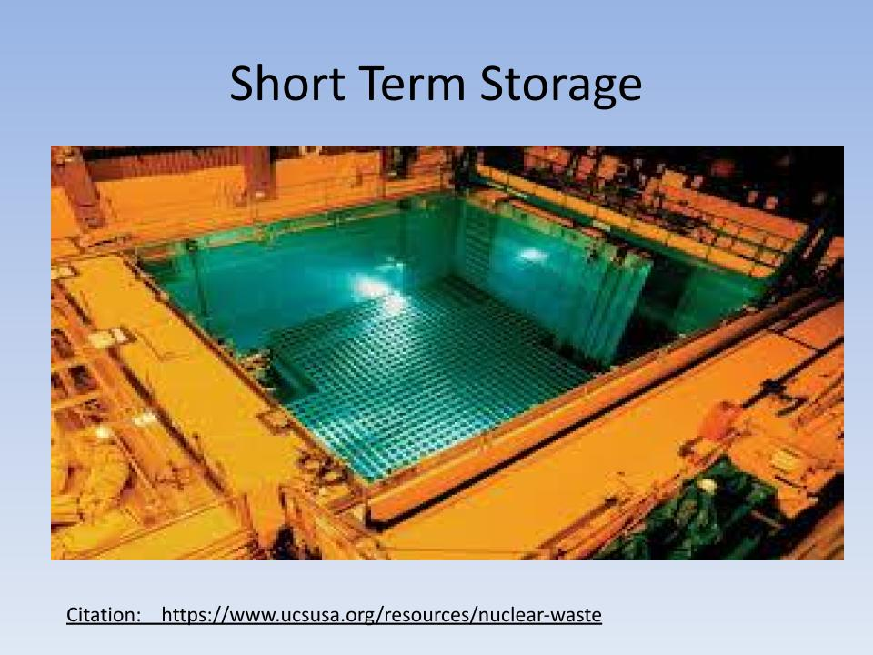
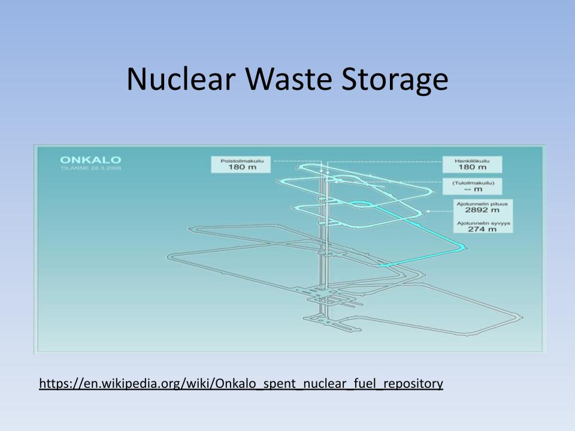
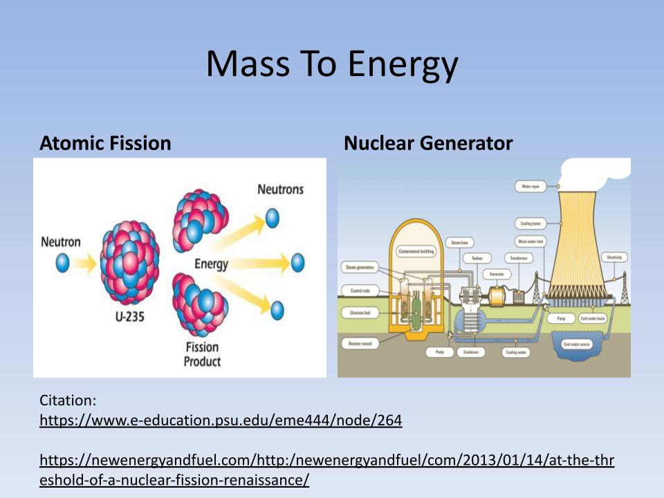
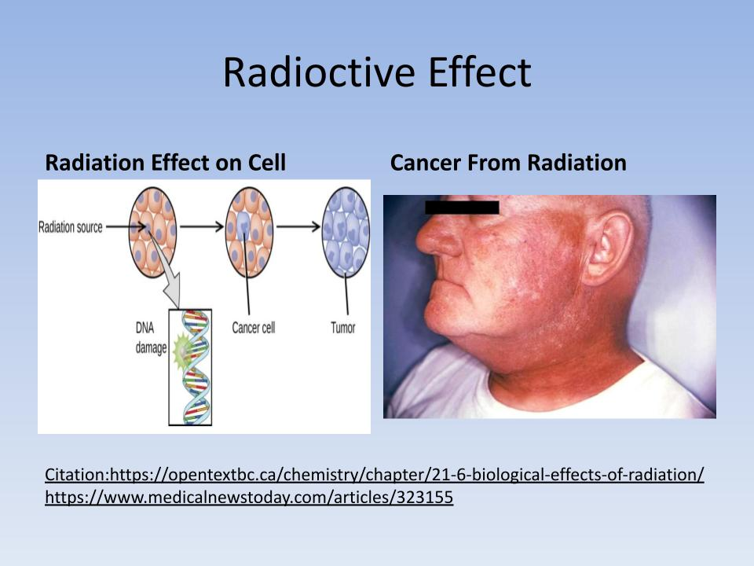
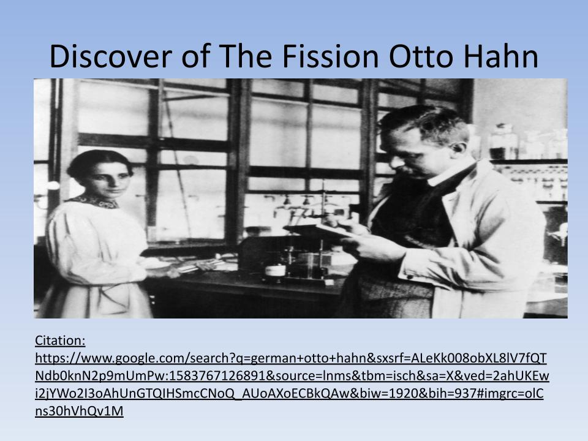
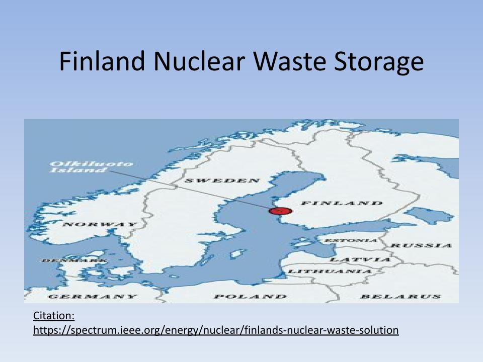
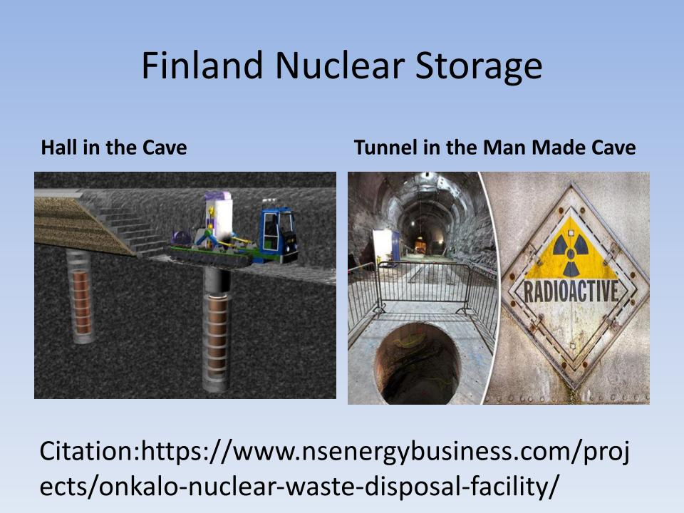
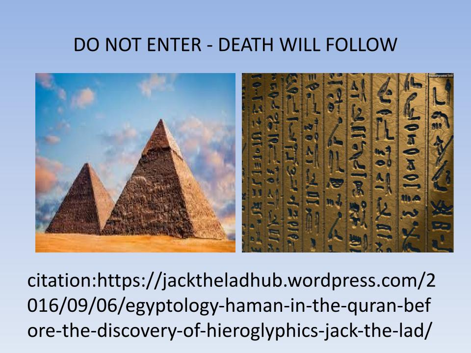

Nuclear waste or radioactive waste is a dangerous squander
that holds radioactive material. This waste usually it's a product
of nuclear power remaining and other nuclear fission for medical use.
However, nuclear waste is organized by government organizations to
protect the human environment and its health.
Nuclear waste or radioactive waste is a dangerous squander
that holds radioactive material. This waste usually it's a product
of nuclear power remaining and other nuclear fission for medical use.
However, nuclear waste is organized by government organizations to
protect the human environment and its health.

Energy Generator
The electric power plant nuclear reactor is also called nuclear fission
the uranium 235 collides with neutrons and becomes highly unstable and
divides into two parts Barium 141 and Krypton 92 with 3 neutron particles,
which release high thermal energy and convert into mechanical or electrical form

Nuclear Decay
In nuclear physics and chemistry, radioactive decay is a result of
nuclear fission, in which the core of an atom divides into two or more
parts. this fission activity gives a result of gamma photons which by
itself is a large energy and it’s called radioactive decay.

Nuclear Waste Management
Nuclear waste is managed through various methods such as deep geological
repositories, spent fuel pools, and dry cask storage. Each method is designed
to handle different levels of radioactive waste.

Exposure to Radiation
Exposure to radiation as a result of nuclear waste might have a direct impact
on the human body for one-sievert energy (1 joule/kg) has the risk of carrying
5.5 percent on humans to create cancer. Also, radiation is linearly to low dosages.

Nuclear Decay
In nuclear physics and chemistry, radioactive decay is a result of
nuclear fission, in which the core of an atom divides into two or more
parts. this fission activity gives a result of gamma photons which by
itself is a large energy and it’s called radioactive decay.

The Discover
This nuclear fission process was discovered by German Otto Hahn on December 17, 1938, and it
was explained theoretically in January 1939. where he took the idea from the biological fission of living
cells. With heavy elements nuclides, reaction can release large energy electromagnetic radiation as
kinetic energy

Onkalo Repository
The Onkalo repository in Finland is a deep geological repository for nuclear waste. It is constructed
in several steps and has enough space to accept fuel for 100 years.

Nuclear Decay
The cost of the nuclear waste disposal project in Finland is 818
million euros and is funded through general electricity.

Do Not Enter
Do not enter the storage; death will follow once you get the result of radiation.